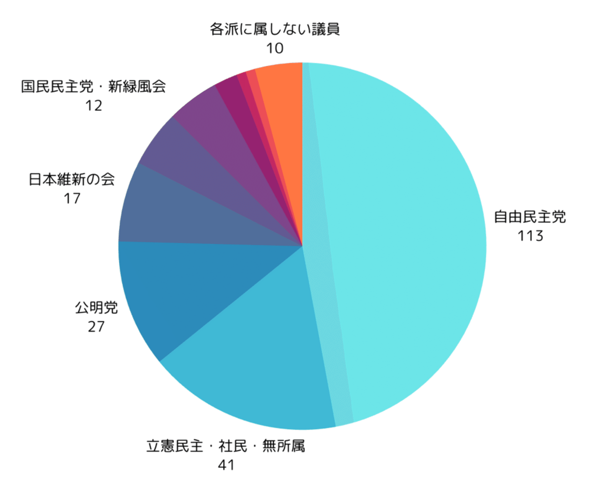
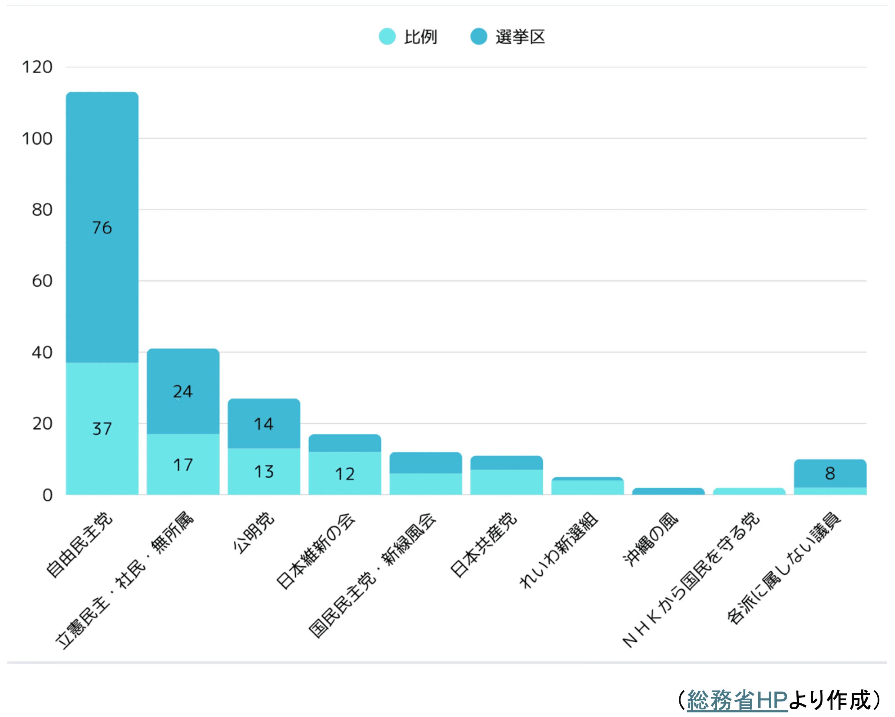

2025年の夏の参議院選挙が近づくにつれ、各種メディアでも徐々に参議院選挙を意識した報道が目立ってくるようになりました。
https://www.nhk.or.jp/senkyo/database/sangiin/
一歩立ち止まって考えてみると、そもそも「参議院」とは何なのでしょうか？「国会」と聞くと、多くの人が真っ先に思い浮かべるのは衆議院かもしれません。実際、テレビや新聞で「解散」や「総選挙」という言葉とともに報じられるのは主に衆議院の動きです。今回は、つい見過ごされがちな参議院の役割について、わかりやすく解説していきます。
参議院って何人いるの？多数派は？
さて、解説に入る前に参議院の基本情報を押さえておきましょう。
参議院議員の定数は248人、うち100人が比例代表選出議員、148人が選挙区選出議員です。この248人の半分、124人を３年に一度の参議院選挙で選ぶことになっています。
ちなみに現在（2025年6月時点）において定数248名のうち８名が欠員のため、全体で240名、そのうち半分弱を自民党（113名）が占めています。

また、比例代表選出議員と選挙区選出議員の割合を見てみると、小規模な政党になればなるほど選挙区よりも比例が多い政党（日本維新の会、日本共産党、れいわ新選組、ＮＨＫから国民を守る党）が目立ってきます。

「静の目」を担う参議院
参議院はしばしば、「良識の府」、「再考の府」と呼ばれます（増山, 2004）。それは、「長期的・総合的な視点」に立ち、落ち着いた議論が求められているからです。
日本の国会は「両院制」、つまり衆議院と参議院の二つの議院がそれぞれ話し合いをして法律などを決める仕組みを採用しています。
両院制には「慎重な議論を行う」「多様な意見を取り入れる」というメリットがあると言われています。いわば、衆議院が“動の目”なら、参議院は“静の目”。スピード感をもって動く衆議院に対して、参議院は一歩引いて落ち着いた視点から議論を行うことが期待されています。
実際、参議院は「長期的・総合的な視点」に立つため、議員の任期も6年と長く、衆議院のように解散されることもありません。また、3年ごとに半数が改選されるため、政治の安定に寄与するという役割も担っています。
参議院って本当に必要なの？
とはいえ、実は参議院が十分な影響力を発揮しにくい状況が存在するのも事実です。
実際、参議院には以前から根強く「本当に必要なの？」という声が寄せられていました（「参議院無用論」と呼ばれていたりします）。また、参議院自体定期的に自分たちの存在意義について自問自答を重ねてきた歴史もあります（参議院制度研究会, 1988）。
様々な理由がありますが、一番大きな理由は「衆議院の優越」によるものではないでしょうか。
「衆議院の優越」とは、二院制を採用する日本の国会において、最終的な意思決定権が衆議院により強く認められているという仕組みのこと（川出・谷口, 2023）。例えば、法案や予算を成立させる際、参議院が否決したとしても衆議院で2/3の多数で再可決してしまえばそれがそのまま通ってしまいます。
いいかえれば、多数派が衆議院の2/3以上を押さえてしまっていれば参議院の意見の重要性は大きく低下してしまいますし、そもそも衆議院と参議院で同じ会派が多数派を占めていれば、「異なる視点から議論を行う」「多様な意見を取り入れる」といった参議院のメリットが大きく損なわれる結果につながることも想定されるのです。
参議院が力を発揮した実例
このように、参議院の位置づけについては色んな意見があるのですが、参議院の重要性が非常に大きくなったタイミングが過去にはあります。いわゆる「ねじれ国会」の時期です。
「ねじれ国会」とは、衆議院と参議院の多数派が異なること。衆議院でAが良い！と言っても参議院でBが良い！と言えば再考を促すことができます。もちろんそれでも衆議院で多数派が2/3以上を押さえてしまっていれば再可決されてしまうのですが、衆議院で多数派が2/3を押さえていない場合は、再可決できる見込みが確実にあるとは言えません。
実際、2007年の参議院選挙では、自民・公明の連立与党が敗北し、与党が参議院で過半数を割る結果となりました。そのため、衆議院と参議院で多数派が異なる「ねじれ国会」が発生しました。
さらに、2009年の衆議院選挙では民主党を中心とする連立政権が誕生しましたが、翌2010年の参議院選挙では過半数を確保できず、参議院での審議が難航する状況となりました。
このとき、衆議院でも法案の再可決に必要な3分の2の議席を確保していなかったため、法案成立が極めて困難な状態に陥ったのです。
国会が置かれている状況にもよりますが、現在のように衆議院においても与党が過半数割れしているような環境においては、これまで以上に政策の方向性にブレーキや修正をかける力を持つ参議院の役割は重要性を増してくると考えられます。
まとめ：参議院は「もう一つの国民の声」
以上、参議院に関して現状やその役割を眺めてきました。
個人的には、衆議院と違って解散がなく任期が長い参議院だからこそ、党派性を超えて専門的な知見をもって中長期的な目線を持って考えることができるというメリットがあるように思います。
夏に予定されている参議院選挙に向けて、ぜひ色んな候補者の声を聞いていただけると幸いです。
（サムネイル画像はWikimedia Commonsより）